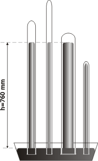
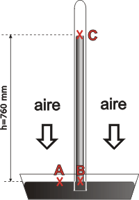

NO ME SALEN
(LECCIONES TEORICAS DE BIOFÍSICA DEL CBC)
FLUIDOS
HIDROSTATICA - PRESION ATMOSFERICA - TORRICELLI
|
|

|
| |
PRESION ATMOSFERICA
“Vivimos en el fondo de un océano de aire”. La frase de Evangelista Torricelli (1608-1647), matemático y físico italiano discípulo de Galileo Galilei, es enormemente descriptiva (Evangelista era el nombre de pila... Torricelli probablemente fuera ateo). El aire es un fluido gaseoso que nos rodea, nos envuelve y nos presiona. Se extiende sobre toda superficie de la Tierra constituyendo la atmósfera que se eleva hasta una altura de unos 20 kilómetros. No tiene un límite definido: a 40 km de altura todavía pueden encontrarse algunas moléculas perdidas. Se compone de una mezcla de gases, principalmente nitrógeno, oxígeno, dióxido de carbono, vapor de agua y algunos otros muy minoritarios.
Nosotros no nos damos cuenta de que el aire que nos rodea nos presiona enormemente, porque nuestro cuerpo está construido a presión: la misma presión adentro que afuera de nuestra piel. Galileo se había dado cuenta del fenómeno con razonamientos muy sutiles, pero nunca había podido hacer una medición concluyente.
El primero en medir el valor de la presión que la atmósfera imprime a la superficie terrestre y a todo bicho que camine sobre ella, fue Torricelli.
|
El experimento (famoso) que le permitió tal hazaña consistió en un simple tubo de vidrio de 1 metro de largo aproximadamente (el largo del tubo importa muy poco), cerrado en una punta y lleno de mercurio. Lo invirtió tapando el extremo abierto para no derramar mercurio y lo introdujo boca abajo en un recipiente ancho igualmente lleno de mercurio (se ve que el mercurio no costaba antes lo que cuesta ahora). La superficie de la columna mercurial descendió llenando un poco más el recipiente inferior... pero sólo un poco. En el tubo permaneció -sin descender más- una columna de mercurio de 760 mm de altura.
Como en el extremo superior no había nada antes, Torricelli dedujo que tampoco había nada después: ese espacio que dejó arriba el mercurio quedaba -literalmente- vacío.
Sorprendido con el resultado repitió el experimento con otros tubos de diferentes grosores y alturas. El resultado fue siempre el mismo. |
|
 |
|
|
En un tubo de menos de 76 cm el mercurio no descendería nada, ni un milímetro, por lo tanto un tubo así no sirve para este experimento.
En cambio, mientras sea suficientemen- te largo, el ancho no tiene ninguna importancia.
|
La interpretación es que la columna de 760 mm de mercurio pesa tanto como la columna de aire de 20 km. El mercurio que hay en el recipiente funciona como una balanza.
El cálculo del valor de la presión no es complicado. Usando el principo general de la hidrostática se comparan dos puntos dentro del mercurio: uno de ellos en la superficie que está al aire, y el otro a la misma altura que el anterior, pero bajo la columna. |
|
|
Según el principio general:
PA = PB
La presión en A es debida a la atmósfera. Y la presión en B obedece exclusivamente a la columna de mercurio, ya que sobre C no hay nada haciendo presión... PC = 0. Luego:
PB = ρHg . h
PB = 133.280 N/m3 0,76 m
PB = 101.300 Pa
Medir la presión atmosférica acá en la superficie de la Tierra, en el 1600 y pico... fue una verdadera proeza. |
|
 |
|
|
peso específico del mercurio
ρHg=
133.280 N/m3
...
densidad del mercurio
δHg=
136.000 kg/m3
|
Sin embargo a Torricelli no le fue sencillo convencer a la gente, por dos motivos: el primero es que el valor es enorme. Imaginate una mesa cuadrada de un metro de lado, o sea 1 m²... ¡¡la atmósfera le está haciendo una fuerza de 101.300 N!! ¡La misma fuerza que le haría una pila de diez autos!
El segundo motivo es que la idea de vacío (el espacio que queda arriba de la columna de mercurio) no fue aceptada fácilmente por la humanidad.
Por razones climáticas la presión de la atmósfera sobre la superficie terrestre no es constante. A veces la columna de mercurio se suspende a 761, 763, ó 759 mm de Hg. ¡El experimento tiene sensibilidad para medir variaciones de presión! Pues entonces nada más práctico que adoptarlo como unidad de medida de presión. Así, 760 mmHg es la presión normal de la atmósfera (760 mmHg = 1 atm).
A alguien también se le ocurrió armar una escala de presiones medidas en atmósferas, tomando el cero en el vacío y el 1 en la superficie terrestre. Todavía hay muchas más escalas de presión... pero por suerte van quedando unas pocas: |
|
|
UNIDADES COMUNES DE PRESION Y SUS CONVERSIONES |
atm |
1 |
76 |
760 |
101.300 |
1.013 |
14,69 |
cmHg |
1 / 76 |
1 |
10 |
1.333 |
13,33 |
0,19331 |
mmHg |
1 / 760 |
0,1 |
1 |
133 |
1,33 |
0,01933 |
Pa |
1/101.300 |
1/1.333 |
0,0075 |
1 |
0,01 |
1 / 6.895 |
hPa |
1 / 1.013 |
7,51879 |
0,75188 |
100 |
1 |
1 / 68,95 |
PSI |
0,06806 |
5,17 |
51,73 |
6.895 |
68,95 |
1 |
|
atm |
cmHg |
mmHg
|
Pa |
hPa
|
PSI |
Nota: Los valores en negrita, expresados en Pa, son los necesarios para hacer cálculos en las unidades del sistema internacional (SI). PSI = libras/pulgada². |
|
|
|
CHISMES IMPORTANTES: |
|
|
- Como en todo fluido, la presión disminuye a medida que ascendemos. En el caso de la atmósfera disminuye a razón de 1 mmHg cada 10 metros, más o menos. (Cuanto más ascendemos menos disminuye, porque la densidad del aire también va disminuyendo: la atmósfera no tiene densidad constante).
- La atmósfera es como una cáscara de la Tierra, pero es tan delgada en comparación con la circunferencia terrestre que si tuvieras que representarla a escala junto con el Planeta sería imposible: aún el lápiz más finito sería más grueso que la atmósfera.
- Un buzo a diez metros de profundidad tiene una sobrepresión de 1 atm en su cuerpo (incluidos los pulmones). Si emerge desde esa profundidad conteniendo la respiración sufrirá daños pulmonares severos. Todo buzo sabe que no debe contener la respiración mientras sube hacia la superficie.
- En un pasado no muy lejano la información meteorológica sobre la presión atmosférica se informaba en milibares.
|
|
|
 |
|
|
| PREGUNTAS CAPCIOSAS: |
|
|
- ¿Cómo funcionan las ventosas, esas que usan los vidrieros y levantan vidrios de más de 20 kilos?
- Un ser humano adulto es una bolsa de piel de 2 m², de modo que la atmósfera lo comprime con una fuerza de 202.600 N. ¿Cómo no nos achicharramos?
- Como la presión atmosférica disminuye 1 mmHg cada 10 metros, se puede calcular que a 7.600 metros la presión sería cero, o sea: se acabó la atmósfera. Pero todos saben que todavía queda algo de aire hasta los 20.000 metros, y más. ¿Qué es lo que está fallando en este razonamiento?
- ¿Por qué los aviones Jumbo tienen ventanitas muy chiquitas y las avionetas las tienen más grandes?
- ¿Por qué cuando subimos a la montaña se nos apunan los oídos? ¿Por qué el guía de montaña nos recomienda hacer lo mismo que antes contamos que hacían los buzos... eso de Don Eustaquio? ¿Por qué, si no, nos convidan un chicle?
- ¿Si la sangre en mis arterias tiene una presión entre 7 y 14 cmHg y afuera de mi piel hay una presión de 76 cmHg, por qué cuando me pincho sale sangre en lugar de entrar aire?
- Cómo puede ser que una mesa de 1 m² de mala calidad pueda soportar el peso de la atmósfera, equivalente al de una pila de 10 autos medianos?
- ¿Podría funcionar una aspiradora en la Luna?
|
|
 |
 |
| |
|
|
| Algunos derechos reservados.
Agradezco a Nahir Bakirdjián por el envío de una errata. Se permite su reproducción citando la fuente. Última actualización sep-07. Buenos Aires, Argentina. |
|
|
 |
| | |
|
|